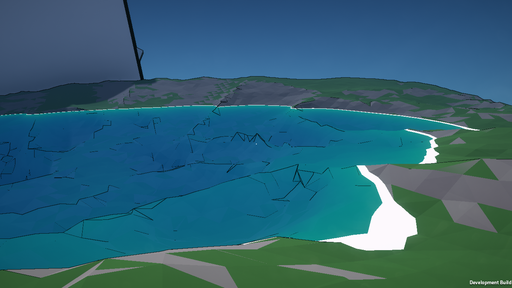
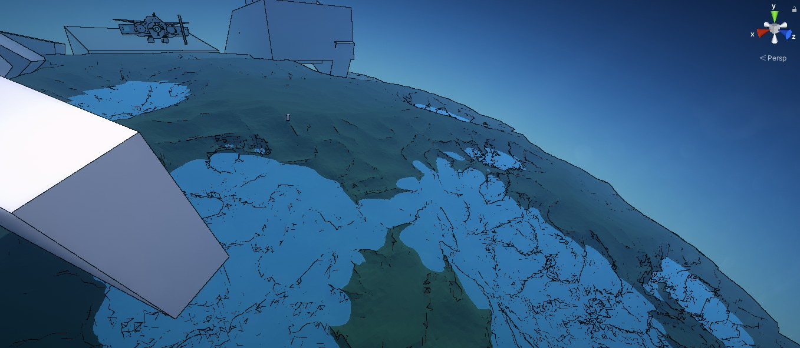
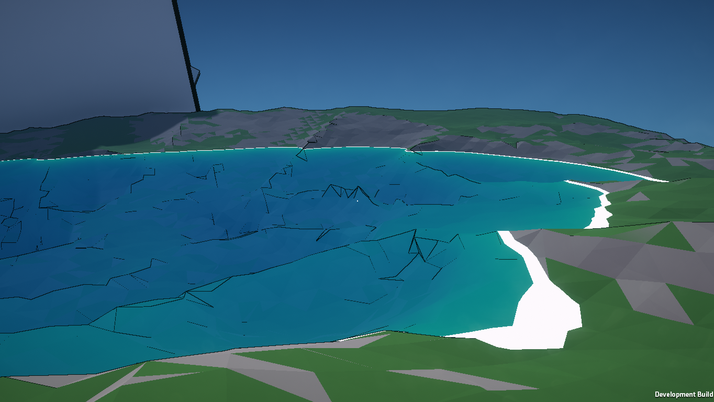
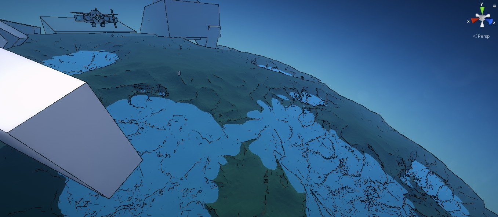

Frontier
This is the project made for my Computer Science project. It is still a work in progress at the moment, however progress is coming along steadily.
The game implements the Marching cubes algorithm and uses 3D Noise functions to produce a procedurally generated planet that the user can explore.
I plan to implement procedural trees, which will be a fun challenge to research tree algorithms. I also plan to improve the water shader shown below by adding specular reflections and waves.
 
The movement featured in the video is temporary also, as most of my efforts are being funnelled into developing the terrain generation algorithms and other terrain features. Updates will be posted here as I make progress.
A development I'm very proud of is the Atmosphere shader made to surround the planets and literally add atmosphere to the environment and make planets appear very pretty from close and afar. It functions as expected, giving a blue sky within the planet, and blue spherical haze on the outside. The rotation of the atmosphere relative to the sun is also accounted to make natural lighting due to the atmosphere.


The game implements the Marching cubes algorithm and uses 3D Noise functions to produce a procedurally generated planet that the user can explore.
I plan to implement procedural trees, which will be a fun challenge to research tree algorithms. I also plan to improve the water shader shown below by adding specular reflections and waves.
 
The movement featured in the video is temporary also, as most of my efforts are being funnelled into developing the terrain generation algorithms and other terrain features. Updates will be posted here as I make progress.
A development I'm very proud of is the Atmosphere shader made to surround the planets and literally add atmosphere to the environment and make planets appear very pretty from close and afar. It functions as expected, giving a blue sky within the planet, and blue spherical haze on the outside. The rotation of the atmosphere relative to the sun is also accounted to make natural lighting due to the atmosphere.